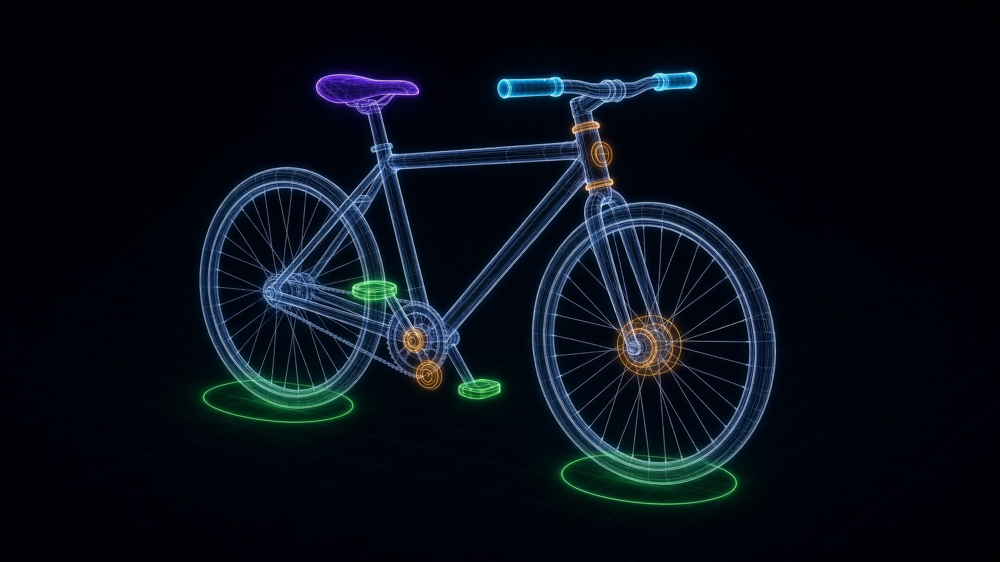
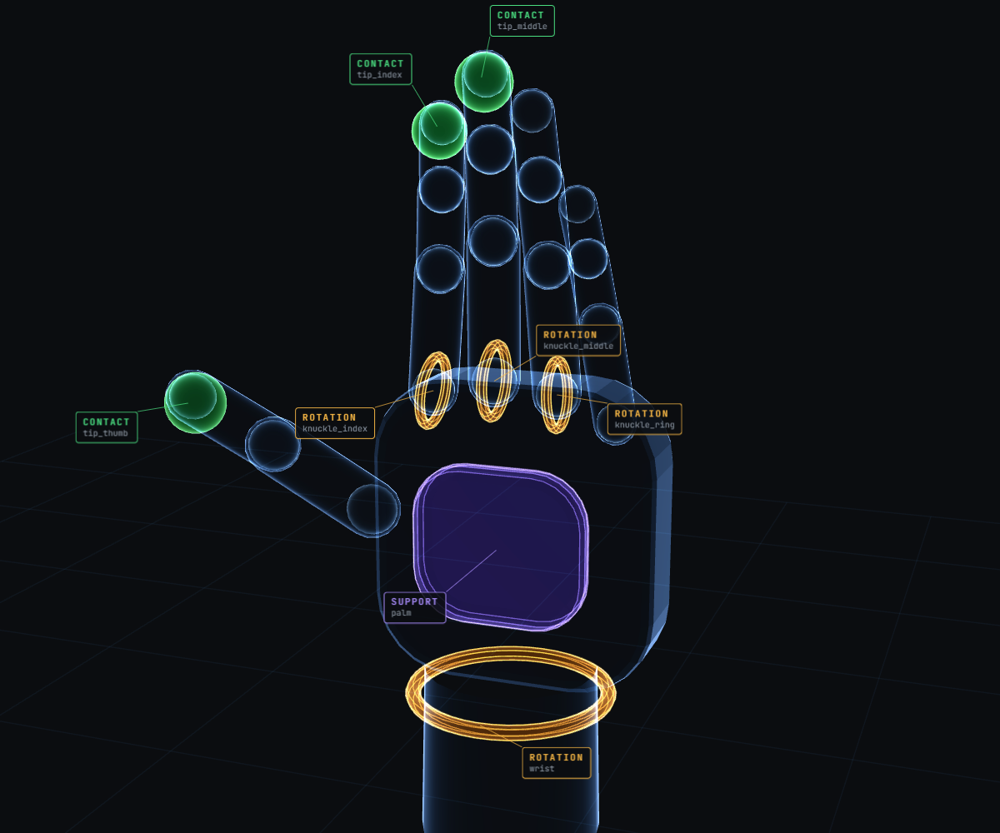
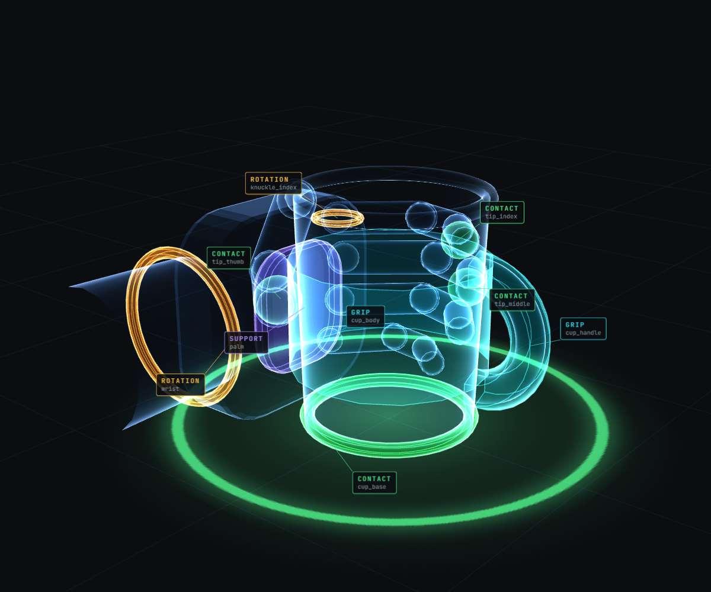

IN DEVELOPMENT · SEEKING DESIGN PARTNERS
The intelligence layer between AI and the 3D world.
Chewi compiles semantic structure onto 3D assets so AI models can understand, reason about and interact with them.
Curious? Get in touch
What Chewi sees
A rider mounting and pedalling. The highlighted regions are compiled action surfaces: the seat, foot and grip contacts that keep the rider attached to the bicycle through the whole motion.
Real pipeline output, not a render.
Joint endpoints versus compiled surfaces, same rider, same bicycle
| Contact | Before | With compiled surfaces |
|---|---|---|
| Grips, target error | 172 mm | 0.02 mm |
| Pedals, positional error | 7.6 to 9.5 mm | 0.01 mm |
| Pedals, sole-angle mismatch | 67.4° (left) | 0.06° left, right within 1.28° |
| Seat, pelvis to seat error | 14.4 mm | 0.018 mm |
| Tires, gap to ground | 9.0 mm rear, 14.6 mm front | none, 2.1 to 2.3 mm grounding overlap |
| Wheel radius | 5.92 mm short | compiled radius drives spin and drivetrain phase |
Measured on the team's V5.1 validation of this asset pair. Before: targets on the ends of the joint chains. After: targets on the compiled action surfaces.
AI understands the world. 3D data doesn't speak its language.
Foundation models increasingly understand objects, behaviours and relationships in the physical world. Existing 3D data is inconsistent, or structured for human production workflows rather than for AI reasoning. Chewi closes that gap.
- 3D assetGeometry and structure, as it exists in the library today.
- ChewiA semantic correspondence layer that transforms 3D assets into structured data AI can understand.
- AI / world modelUnderstands, reasons about and interacts with the object.
From geometry to machine-understandable structure
Chewi enriches assets with structured information about components, relationships, articulation, physical properties and possible interactions, so AI models can apply what they already know about the world directly to 3D data.
A hand opening from a fist: contact pads on the fingertips, rotation axes at the knuckles and wrist, the palm as a support surface. Live, drag to orbit.

Components & relationships
What the elements are and how they relate to each other.
Articulation & structure
Joints, hierarchies, axes and movable parts.
Physical & functional properties
Structured properties for reasoning about behaviour.
Interaction & affordances
How objects and their parts can be manipulated.
Machine-readable semantics
Structured information that travels with the asset.
Built for world models, robotics, industrial simulation and spatial computing.
Where this matters
World models & spatial AI
Representations for models that reason about the physical world.
Robotics & physical AI
Structured 3D data for simulation, training and interaction.
Industrial simulation & digital twins
Higher-precision semantic and physical representations.
Spatial computing & AI glasses
Machine understanding of objects, components and relationships.
Built to scale across diverse 3D asset libraries.
CHEWI is being developed to scale semantic structuring across large, diverse 3D asset libraries - reducing the manual work required to prepare 3D data for AI. CHEWI is being developed to help transform existing 3D assets into structured, machine-understandable data for AI, simulation and spatial applications.
Precision matched to the application
Different applications need different levels of semantic and physical precision. Chewi is designed for high-volume automation through higher-assurance workflows, with tighter validation, confidence scores and expert review where the application demands it.

Structure AI can reason about. Interaction AI can act on.
CHEWI adds structured information about what an object is made of, how its parts relate, and how those parts can be interacted with - creating a richer bridge between AI models and 3D assets.
- 3D Asset
- CHEWI
- Understand
- Reason
- Interact